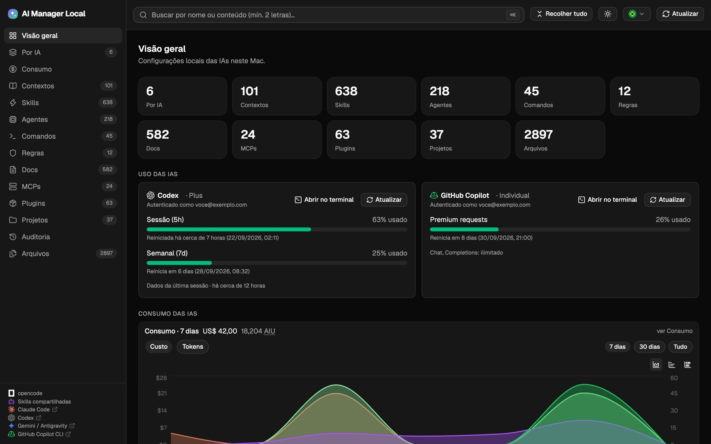

Por IA e por projeto
Escolha a ferramenta e veja tudo dela; ou navegue pelos repositórios detectados em ~/Projetos,
com árvore, MIME, tamanho e autor do último commit.
Roda 100% na sua máquina
Painel web local para ver e editar tudo das IAs instaladas no seu Mac — opencode, Claude Code, Codex, GitHub Copilot CLI e Gemini/Antigravity — no global e dentro dos seus projetos.

Skills, agentes, comandos, regras, MCPs, plugins e arquivos de configuração — por tipo de artefato, por IA ou por projeto. Com viewer, edição segura e auditoria.
Escolha a ferramenta e veja tudo dela; ou navegue pelos repositórios detectados em ~/Projetos,
com árvore, MIME, tamanho e autor do último commit.
Markdown com Mermaid, JSON, imagens e Monaco. Backup automático (10 versões por arquivo), detecção de conflito se o arquivo mudar por fora e restauração pela interface.
Limites e reset das contas, custo e tokens lidos dos logs locais — por modelo, projeto e dia — e o top 20 de skills por invocações e tokens de contexto.
Ative e desative MCPs direto no card, autentique por OAuth e acompanhe versão instalada vs. publicada, com atualização e cópia do comando para o seu terminal.
Um clique abre a CLI no terminal detectado ou no app nativo, já no diretório do projeto — útil para continuar exatamente onde o painel te mostrou o arquivo.
Busca global e por conteúdo com destaque das linhas, interface em PT-BR e EN e modo claro/escuro. Atalhos
⌘K, ⌘E e ⌘S.
O backend serve o build do frontend em 127.0.0.1:4747. Para desenvolvimento com hot reload,
suba o Vite em paralelo (just dev).
gh repo clone mvvitorsilvati/ai-manager-local
cd ai-manager-local
just setup # deps: uv sync + pnpm install
just start # build do front + sobe na 4747
Sem just: cd backend && uv sync, cd web && pnpm install && pnpm build e então
uv run --project backend backend/app.py.
Os cards de uso só aparecem com a IA autenticada localmente — o login é feito na própria ferramenta.
O painel foi feito para inspecionar arquivos sensíveis: configurações, regras e credenciais de IA que ficam na sua máquina. Por isso ele não manda nada para lugar nenhum.
Nada exposto na rede por padrão; o host só muda em container, por escolha explícita.
Backups e auditoria ficam em ~/.ai_management_local — no seu disco, sob seu controle.
As chamadas para fora são só as APIs oficiais: limites e uso das contas, versões publicadas no npm e as páginas de status — com as credenciais que já existem na máquina.